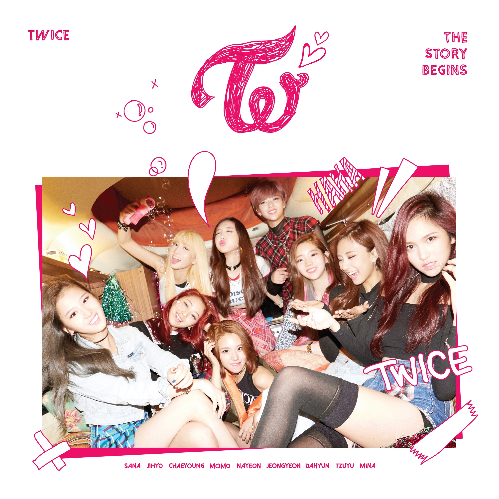
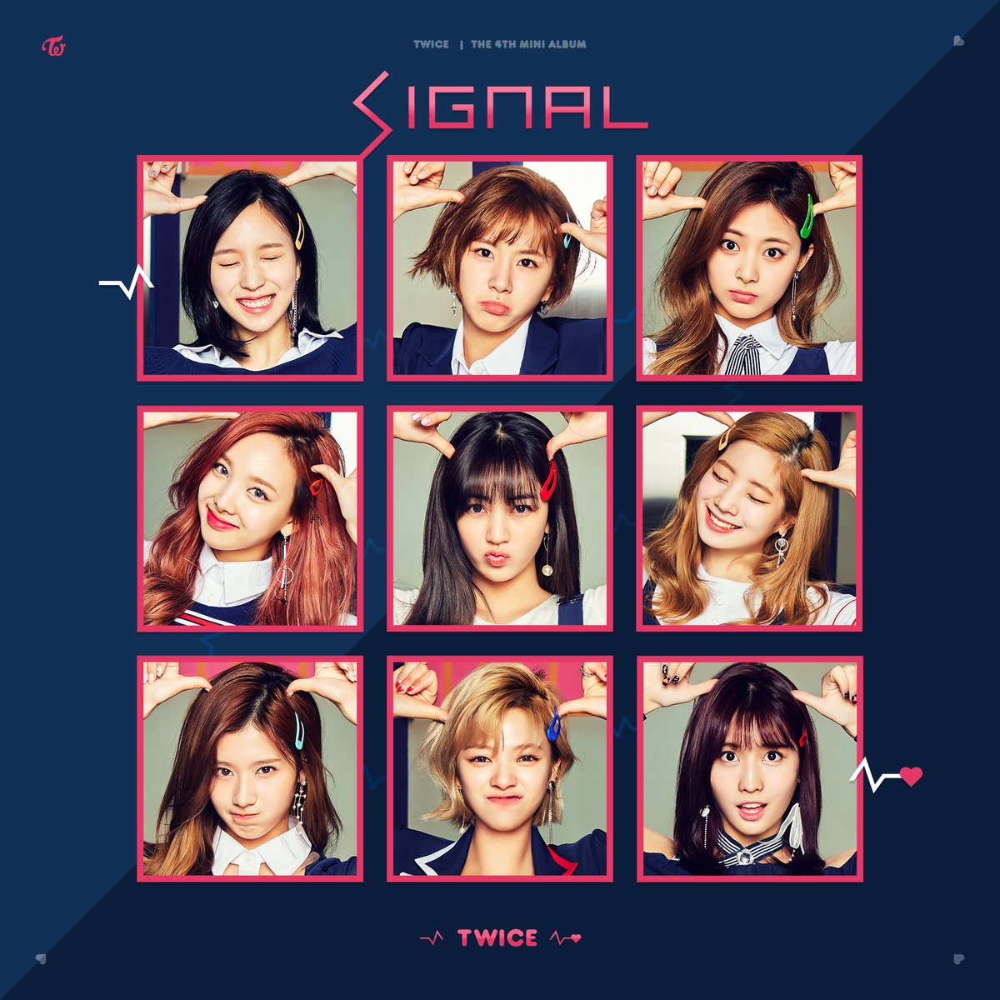

앨범 정보
|  | 앨범명 : [THE STORY BEGINS] 출시일자 : 2015.10.20 타이틀곡 : [OHH-AHH하게(LIKE OHH-AHH)] 수록곡 : [다시해줘] [미쳤나봐] [Truth] [Candy Boy] [Like A Full] |
앨범명 : [PAGE TWO] 출시일자 : 2016.04.25 타이틀곡 : [CHEER UP] 수록곡 : 소중한 사랑, [Touchdown] [툭하면 톡] [Woohoo] [Headphone 써] CD ONLY : [I'm Gonna Be A Star] |
|
앨범명 : [TWICECASTER-LANE1] 출시일자 : 2016.10.24 타이틀곡 : [TT] 수록곡 : [1 TO 10] [PONYTAIL] [JELLY JELLY] [PIT-A-PAT] [NEXT PAGE] [ONE IN A MILLION] |
|
 |
앨범명 : [TWICECASTER-LANE2] 출시일자 : 2017.2.20 타이틀곡 : [KNOCK KNOCK] 수록곡 : [녹아요] [TT] [1 TO 10] [PONYTAIL] [JELLY JELLY] [PIT-A-PAT] [NEXT PAGE] [ONE IN A MILLION] CD ONLY : [TT(TAK Remix)] [OHH-AHH하게(Inst.)] [CHEER UP(Inst.)] [TT(Inst.)] |
|  | 앨범명 : [SIGNAL] 출시일자 : 2017.05.15 타이틀곡 : [SIGNAL] 수록곡 : [하루에 세번] [ONLY 너] [HOLE ME TIGHT] [EYE EYE EYES] [SOMEONE LIKE ME] |
앨범명 : [TWICETAGRAM] 출시일자 : 2017.10.25 타이틀곡 : [LIKEY] 수록곡 : [거북이] [MISSING U] [WOW] [FFW] [DING DONG] [24/7] [날 바라바라봐] [ROLLIN'] [LOVE LINE] [힘내!(DON'T GIVE UP)] [널 내게 담아] [잘자요 굿나잇] |
|
 |
앨범명 : [MERRY & HAPPY] 출시일자 : 2017.12.11 타이틀곡 : [HEART SHAKER] 수록곡 : [MERRY & HAPPY] [LIKEY] [거북이] [MISSING U] [WOW] [FFW] [DING DONG] [24/7] [날 바라바라봐] [ROLLIN'] [LOVE LINE] [힘내!(DON'T GIVE UP)] [널 내게 담아] [잘자요 굿나잇] |
 |
앨범명 : [#TWICE](일본) 출시일자 : 2017.06.28 타이틀곡 : [TT-JAPANESE VER] 수록곡 : [LIKE OHH-AHH-JAPANESE VER] [CHEER UP-JAPANESE VER] [KNOCK KNOCK-JAPANESE VER] [SIGNAL-JAPANESE VER] [OHH-AHH하게(LIKE OHH-AHH)] [CHEER UP] [TT] [KNOCK KNOCK] [SIGNAL] |
 |
앨범명 : [ONE MORE TIME](일본) 출시일자 : 2017.10.18 타이틀곡 : [ONE MORE TIME] 수록곡 : [LUV ME] [ONE MORE TIME(Inst.)] [LUV ME(Inst.)] |